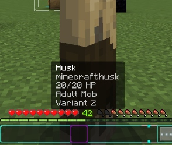
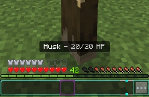

Zxra Creation
Zxra Creation
Ini adalah addon untuk melihat identitas blok/entitas dan properti dari blok/entitas tersebut. Ini masih versi awal jadi sudah pasti banyak bug. Jika menemukan sesuatu yang dapat memperbagus addon ini, bisa kirim ke sosial media kita. Ingat yang berkaitan dengan addon ini
Memerlukan addon Zxra Api untuk mengatasi bug dari nama blok yang masih mentahan
#Actionbar
#Fungsi
#Sistem
Actionbar
Tampilan teks dalam Minecraft
Jongkok(Sneak):

players.runCommand(`titleraw @s actionbar {
Jongkok(Sneak) - Blok
players.runCommand(`titleraw @s actionbar {
Tanpa Jongkok(No Sneak)

players.runCommand(`titleraw @s actionbar {
Fungsi
Fungsi fungsi yang bisa digunakan dalam skript didalam addon ini
Menghitung jarak dua titik:
}
Mengatur nama dari sebuah blok:
}
Sistem
Inti utama dari addon ini yang akan menjalankan semua fungsi yang sudah diatur
system.runInterval(() => {
for(
view = view[
view.getComponent(
view.getComponent(
view.getComponent(
view.getComponent(
view.getComponent(
players.isSneaking ? Sneak: No-Sneak;
}
view = players.getBlockFromViewDirection().block;
}
console.warn(e)
}
}
}
},
system.beforeEvents.watchdogTerminate.subscribe(e => {
e.cancel =
world.sendMessage(
});